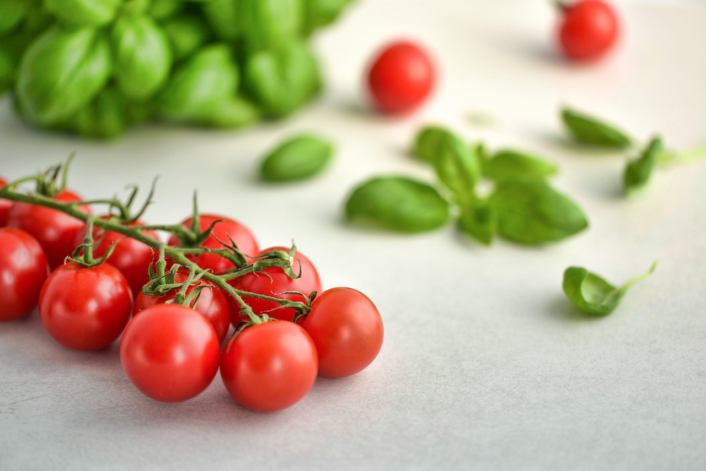

Organic products are much fresher than regular, conventional products. The reason for that is that non-organic products are infused with preservatives that make them last longer. But organic produce doesn’t have any of that, which means it’s fresher. So, that’s one of the best benefits of eating an organic diet.
Organic farms use less energy, they pollute the environment a lot less than conventional farms, they conserve water more, increase soil fertility, and reduce soil erosion. Farms that use synthetic pesticides can cause damage to people living nearby, as well as to birds and animals, so organic farms are safer for everyone, since they don’t use any pesticides.
Healthy Avacados

Pick some Straberries
